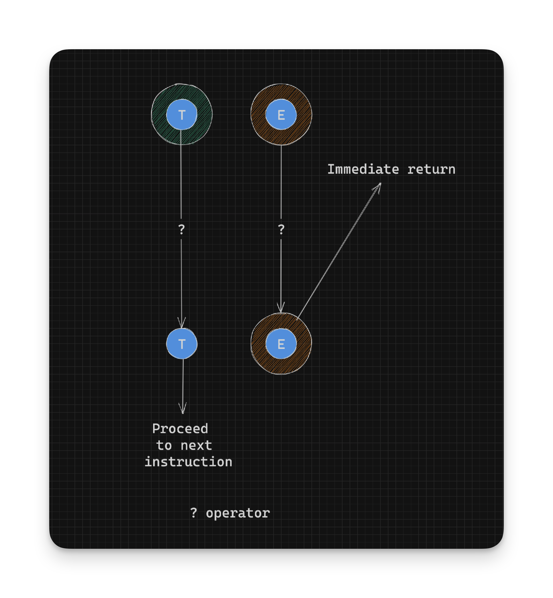

Working With Rust Result - Combining Results with the Question Mark Operator - Part 8
Lets try to perform a calculation on multiple numbers parsed from strings:
let numbers_1: Result<u32, ParseIntError> = add_numbers("10", "20", "30"); // Ok(60)
let numbers_2 = add_numbers("ten", "20", "30"); // Err(ParseIntError { kind: InvalidDigit })
let numbers_3 = add_numbers("10", "twenty", "30"); // Err(ParseIntError { kind: InvalidDigit })
let numbers_4 = add_numbers("10", "20", "thirty"); // Err(ParseIntError { kind: InvalidDigit })Here’s the definition of add_numbers:
fn add_numbers(one: &str, two: &str, three: &str) -> Result<u32, ParseIntError> {
parse_number(one) // try and get the first number. Returns Result<u32, ParseIntError>
.and_then(|n1| { // if that succeeds,
parse_number(two) // try and get the second number. Returns Result<u32, ParseIntError>
.and_then(|n2| { // if that succeeds
parse_number(three) // try and get the third number. Returns Result<u32, ParseIntError>
.map(|n3| n1 + n2 + n3) // if that succeeds, add up all the previous numbers. Returns Result<u32, ParseIntError>
})
})
}This is similar to how we previously parsed two numbers. This is quickly becoming hard to reason about. Parsing more numbers like this would be almost unmaintainable. Luckily Rust gives us a simpler way to do this.
The question mark operator
Rust has the question mark operator (?) which allows you to simply
return an error or extract a success value. You can think of it as an unwrap on Ok with an immediate return on Err, instead of panic-ing.

Here’s the definition of and_numbers_2 which uses the ? operator:
fn add_numbers_2(one: &str, two: &str, three: &str) -> Result<u32, ParseIntError> {
let n1: u32 = parse_number(one)?; // Get the number or return an Err
let n2: u32 = parse_number(two)?; // Get the number or return an Err
let n3: u32 = parse_number(three)?; // Get the number or return an Err
// If we got here, all the numbers are valid
Ok(n1 + n2 + n3) // Add all the numbers and return an Ok
}It’s important to note that if any of the parse_number function calls return an Err, the add_numbers_2 function would return that Err as the final result instead of proceeding to the next line.
We have to still wrap the final result in an
Okconstructor asadd_numbers_2returns aResult<u32, ParseIntError>.
We can see that the add_numbers_2 function is easier to reason about than chaining together and_then and map calls as in the add_numbers function. The ? operator is supported for Result and Option types at the moment.
Keep aligning those error values
Something else to keep in mind is that we still need to align on the Err value as we did when using and_then:
fn add_numbers_3(one: &str, two: &str, three: &str) -> Result<u32, ParseIntError> {
let n1: u32 = parse_number(one)?; // Result<u32, ParseIntError>
let n2: u32 = parse_number(two).map_err(|e| MyError(e.to_string()))?; // Result<u32, MyError>
let n3: u32 = parse_number(three)?; // Result<u32, ParseIntError>
// If we got here, all the numbers are valid
Ok(n1 + n2 + n3) // Add all the numbers and return an Ok
}The above leads to an error:
error[E0277]: `?` couldn't convert the error to `ParseIntError`
--> src/main.rs:414:74
|
412 | ...numbers_3(one: &str, two: &str, three: &str) -> Result<u32, ParseIntError> {
| -------------------------- expected `ParseIntError` because of this
413 | ...1: u32 = parse_number(one)?; // Get the number or return an Err
414 | ...2: u32 = parse_number(two).map_err(|_| MyError("Blah".to_owned()))?; // Get the number...
| ----------------- ---------------------------------------^ the trait `From<MyError>` is not implemented for `ParseIntError`, which is required by `Result<u32, ParseIntError>: FromResidual<Result<Infallible, MyError>>`
| | |
| | this can't be annotated with `?` because it has type `Result<_, MyError>`
| this has type `Result<_, ParseIntError>`
|
= note: the question mark operation (`?`) implicitly performs a conversion on the error value using the `From` trait
= help: the following other types implement trait `FromResidual<R>`:
<Result<T, F> as FromResidual<Yeet<E>>>
<Result<T, F> as FromResidual<Result<Infallible, E>>>
= note: required for `Result<u32, ParseIntError>` to implement `FromResidual<Result<Infallible, MyError>>`The important bits are:
error[E0277]:
?couldn’t convert the error toParseIntError
Result<u32, ParseIntError> ————————– expected
ParseIntErrorbecause of this
the trait
From<MyError>is not implemented forParseIntError, which is required byResult<u32, ParseIntError>: FromResidual<Result<Infallible, MyError>>
the question mark operation (
?) implicitly performs a conversion on the error value using theFromtrait
The error states that we need an Err value of type ParseIntError and we have an Err value of type MyError. If we have a From instance to convert from MyError to ParseIntError it would be called and the conversion automatically performed for us.
We can’t directly create a ParseIntError as the constructor is private. We can however create one from parsing a String that doesn’t represent a number. Using that information we can create a terrible From implementation to convert from MyError to ParseIntError:
impl From<MyError> for ParseIntError {
fn from(source: MyError) -> Self {
parse_number(&source.0).unwrap_err() // Forcing values again
}
}With the above conversion in place add_numbers_3 compiles with out any errors, indicating that MyError was implicitly converted to ParseIntError and aligning our Err values almost for “free”. The question mark operator makes working with Result so much easier.
- Continue on to Combining Results Some More
- Back to TOC